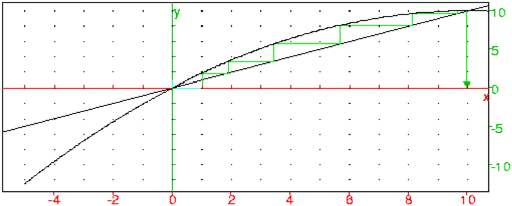

Soit la suite définie par :
u0=1
un+1=1/10un(20−un)
Calculer u1 édutier les variations de la fonction f(x)=1/10x(20−x).
En déduire que pour tout n un ∈ [0;10] et que u est croissante.
l’expression de un en fonction de n.
On montre facilement que f est une bijection de [0;10] sur [0;10] et donc
puisque u0 ∈ [0;10] et que un+1=f(un),
pour tout n≥ 0 un ∈ [0;10].
On a un+1−un=un(10−un)/10 donc puisque pour tout n un ∈ [0;10],
la suite u est croissante et majorée par 10, donc u est convergente et
sa limite l vérifie l≥ u0 et l=1/10l(20−l)
puisque f est continue.
Donc u converge vers l=10.
On tape pour définir la fonction f :
f(x):=x*(20-x)/10
On tape pour voir les 6 premiers termes de la suite u :
plotseq(f(x),x=1,6)
On obtient :

On tape pour avoir le signe de un+1−un :
factor(f(un)-un)
On obtient :
(-(un-10)*un)/10
On tape pour résoudre l=1/10l(20−l) :
solve(f(x)=x)
On obtient :
[0,10]
Soit la suite définie par :
u0=1
un+1=un/3+n−1
Déterminer a et b pour que la suite :
vn=k*un+a*n+b soit une suite géométrique dont on déterminera la
raison.
En déduire l’expression de un en fonction de n.
On a :
vn+1=k*un+1+a*(n+1)+b=k*un/3+k*n−k+a*(n+1)+b
donc :
vn+1=k*un/3+(a*n+b)/3+2*(a*n+b)/3+k*n+a−k
vn+1=vn/3+2*(a*n+b)/3+k*n+a−k
Si on veut que v soit une suite géométrique , il faut que :
2*(a*n+b)+3*k*n+3*a−3*k=0
ou encore :
2*a+3*k=0 et 2*b+3*a−3*k=0
cela donne :
3*k=−2*a et 2*b=−5*a
On choisit a=−6 et alors k=4 et b=15 et alors :
vn+1=vn/3 avec vn=4*un−6*n+15 donc v0=19
On en déduit que :
vn= 19*1/3n
donc
un= 19/4*1/3n+3/2*n−15/4
Soit la suite définie par :
u0=1
n*un=(n+1)*un−1+1 si n>0
Calculer u1,u2,u3,u4,u5.
À votre avis quelle est l’expression de un en fonction de n ?
Démontrez que cette expression est la bonne.
Généraliser lorsque u0=a et n*un=(n+1)*un−1+1 si n>0
On tape :
u(n):=ifte(n==0,1,u(n-1)*(n+1)/n+1/n)
u(n)$(n=0..5)
On obtient :
1,3,5,7,9,11
On pense que un=2*n+1 et on va le montrer par récurrence.
La relation est vrai pour n=0 : u0=2*0+1=1
Supposons que pour tout 0≤ k<n, uk=2*k+1 donc un−1=2*n−1
On a n*un=(n+1)*(2*n−1)+1
On tape :
factor((n+1)*(2*n-1)+1)
On obtient :
(2*n+1)*n
donc n*un=(2*n+1)*n et comme n>0 on peut diviser par n donc
un=2*n+1.
Généralisation
On tape :
u(n):=ifte(n==a,1,u(n-1)*(n+1)/n+1/n)
normal(u(n)$(n=0..5))
On obtient :
a,2*a+1,3*a+2,4*a+3,5*a+4,6*a+5
On pense que un=(n+1)*a+n et on va le montrer par récurrence.
La relation est vrai pour n=0 : u0=(0+1)*a+0=a
Supposons que pour tout 0≤ k<n, uk=(k+1)+k donc un−1=n*a+n−1
On a n*un=(n+1)*(n*a+n−1)+1
On tape :
factor((n+1)*(n*a+n-1)+1)
On obtient :
n*(a*n+a+n)
donc n*un=n*(a*n+a+n) et comme n>0 on peut diviser par n donc
un=a*n+a+n=(n+1)*a+n.
On peut aussi chercher à calculer :
un−un−1 en fonction de un−1−un−2.
On a :
un−un−1=(n2*un−1−n2*un−2−un−1−1)/(n2−n)
On sait que :
un−1=n*un−2+n*un−1−1 donc
un−un−1=un−1−un−2=...=u1−u0=a+1
Ainsi, un est une suite arithmétique de raison a+1 et donc
| un=n(a+1)+u0=n(a+1)+a=a(n+1)+n |
Avec Xcas, on pose un=un, un1=un−1 et
un2=un−2.
On tape :
un:=(n*un1+un1+1)/n
un1:=(n*un2+1)/(n-1)
simplify(un-un1)
On obtient :
(un2+1)/(n-1)
simplify(un1-un2)
On obtient :
(un2+1)/(n-1)
Donc un−un−1=un−1−un−2=...u1−u0=a+1.
Avec Xcas, si on veut obtenir directement un-un1=un1-un2,
on doit faire la différence entre :
un11=un−1 que l’on exprime en fonction de un2=un−2 et
un1=un−1 qui ne doit pas changer. La difficulté ici est que dans
un=un, il y a (n*un−1+un−1+1) et on doit laisser n*un−1
inchangé alors qu’il faut exprimer un−1+1 en fonction de
un2=un−2.
On tape :
un:=(n*un1+un11+1)/n
un11:=(n*un2+1)/(n-1)
simplify(un-un11)
On obtient :
un1-un2
Donc on a :
un−un−1=un−1−un−2=...=u1−u0=a+1
Remarque
On peut aussi remarquer que l=−1 est solutipon de n*l=(n+1)*l+1.
Donc si vn=un+1, alors v vérifie :
v0=a+1 et nvn=(n+1)vn−1 ou encore
vn=n+1/nvn−1=n+1/n−1vn−2=...=(n+1)v0=(n+1)(a+1)
donc
| un=(n+1)(a+1)−1=(n+1)a+n |
Soit la suite définie par :
u0=5=a
n*un=(n+2)*un−1+6 si n>0
et soit dn=un+1−un.
Calculer u1,u2,u3,u4,u5 et d0,d1,d2,d3,d4.
À votre avis quelle est l’expression de dn en fonction de n ?
Démontrez que cette expression est la bonne.
En déduire l’expression de un en fonction de n
Généraliser lorsque u0=a et n*un=(n+1)*un−1+1 si n>0
On peut suivre les questions et montrer que :
dn=8(n+2) et que un=4n(n+3).
On peut aussi remarquer que l’équation en x :
n*x=(n+2)*x+6 a une solution indépendante de n qui est l=−3.
On pose alors vn=un+3 et v vérifie :
v0=u0+3 et n*vn=n*(un+3)=(n+2)*(un−1+3)=(n+2)*vn−1, donc
vn=n+2/nvn−1=n+2/nn+1/n−1=....(n+2)(n+1)/2v0
Donc
| un=vn−3= |
| (u0+3)−3= |
| = |
Pour a=5 on trouve :
| un=4n2+12n+5 |
Soit f la fonction définie sur ]−∞;−1[∪]−1;+∞[ par
f(x)=x+2/x+1.
1/ Résoudre f(x)=x.
On notera r1 la racine positive et r2 la racine négative.
2/ Soit (u) la suite définie par :
u1=1
un=f(un−1) pour n>1
Calculer un pour n=1,2,3,4,5
3/ Soit (v) la suite définie par :
vn=un−r1/un−r2=g(un)
a) Démontrer que (v) est une suite géométrique.
b) Expliciter vn en fonction de n
c) Expliciter un en fonction de n
d) Calculer l=limn → +∞ un
4/ Donner la plus petite valeur de n pour laquelle |un−l|<10−1000
1/ Exprimer u2n en fonction de un.
2/ Determiner et étudier la fonction f2 telle que u2n=f2(un).
3/ Soit (w) la suite définie par :
w0=1 et wn=f2(wn−1) pour tout n>0.
Montrer que (w) a la même limite l que (u).
4/ Donner la plus petite valeur de n pour laquelle |wn−l|<10−1000
1/ Exprimer u3n en fonction de un.
2/ Determiner et étudier la fonction f3 telle que u3n=f3(un).
3/ Soit (t) la suite définie par :
t0=1 et tn=f3(tn−1) pour tout n>0.
Montrer que (t) a la même limite l que (u).
4/ Donner la plus petite valeur de n pour laquelle |tn−l|<10−1000
Étant donné p entier positif, refaire la même chose à partir de la
fonction :
f(x)=x+p/x+1
pour trouver une valeur approchée de √p.
1/ On tape :
f(x):=(x+2)/(x+1)
puis :
solve(f(x)=x)
On obtient :
[-sqrt(2),sqrt(2)]
2/ On tape :
1
puis :
f(ans())
puis :
enter enter enter enter
On obtient :
3/2, 7/5, 17/12, 41/29
3/ On a :
vn=un−√2/un+√2
On tape :
g(x):=(x-sqrt(2))/(x+sqrt(2))
Puis, on tape :
v(n):=g(u(n))
puis :
h(x):=solve(g(y)=x,y)[0]
puis :
h(x)
On obtient :
(x*sqrt(2)+sqrt(2))/(-x+1)
donc
un=√2 vn+1/−vn+1 et
vn+1=g(vn+1)=g(f(un))=g(f(h(vn)))
On tape :
k:=g@f@h
puis :
normal(k(x))
On obtient :
((sqrt(2)-2)*x)/(sqrt(2)+2)
donc vn+1=(√2−2)*vn/√2+2
la suite (v) est donc une suite géométrique de raison :
(sqrt(2)-2)/(sqrt(2)+2)=2*sqrt(2)-3
puis on tape :
normal(expand(mult_conjugate(g(1))))
On obtient :
2*sqrt(2)-3
Donc :
vn=(2*√2−3)n
Donc on tape h(vn) :
h((2*sqrt(2)-3)^n)
On obtient un :
((2*sqrt(2)-3)^n*sqrt(2)+sqrt(2))/(-(2*sqrt(2)-3)^n+1)
On sait que (v) converge vers 0 car on a :
vn=(2*√2−3)n et −1<2*√2−3<0.
Quand x tend vers 0, h(x) tend vers h(0)=√2, donc (u) converge
vers √2.
On a normal(h(x)-h(0))=(-(2*sqrt(2))*x)/(x-1)
4/ On tape :
normal(diff(h(x)))
On obtient :
(2*sqrt(2))/(x^2-2*x+1)
On a :
pour tout n, −|v0|=−3+2√2 ≤ vn ≤ 3−2√2=|v0|, donc :
−1.2<−4+2 √2 ≤ vn−1 ≤ 2−2 √2<−0.8, donc :
si −3+2 √2 ≤ x ≤ 3−2√2,
On a
|h′(x)|<(2*√2)/(2−2*√2)2=(3*√2+4)/2
et
|un−√2|=|h(vn)−h(0)|<|vn|*(3*√2+4)/2 <5* (0.2)n
On tape :
solve(5*0.2^n<10^-1000,n)
log10(5)+n*log10(0.2)<−1000
donc
n>=1432>(1000+log10(5))/(1−log10(2))>1431
1/ On a :
v2n=(2√2−3)(2n)=vn2,
donc
u2n=h(v2n)=h(vn2)=h((g(un))2
2/ On tape puisque sq(x)=x^2 :
f2(x):=normal((h@sq@g)(x))
puis
f2(x)
On obtient :
((x^2+2)*1/2)/x
On reconnait la fonction obtenue par la méthode de Newton et
qu’il faut itérer pour obtenir une approximation de √2.
3/ On a :
w0=u1
w1=f2(w0)=f2(w1)=u2
w2=f2(w1)=f2(u2)=u4
w3=f2(w2)=f2(u4)=u8
....donc
wn=u2n
4/ Si on prend 2n ≥ 1432, on aura |wn−l|<10−1000
On tape :
solve(2^n>1432.,n)
On obtient :
n>10.48...
Donc si n≥ 11), on aura |wn−l|<10−1000
1/ On a :
v3n=(2√2−3)(3n)=vn3,
donc :
u3n=h(v3n)=h(vn3)=h((g(un))3
2/ On tape :
p3(x):=x^3
f3(x):=normal((h@p3@g)(x))
puis
f3(x)
On obtient :
(x^3+6*x)/(3*x^2+2)
3/ On a :
t0=u1
t1=f3(t0)=f3(u1)=u3
t2=f3(t1)=f3(u3)=u9
t3=f3(t2)=f3(u9)=u27
....donc
tn=u3n
4/Si on prend 3n ≥ 1432, on aura |tn−l|<10−1000
On tape :
solve(3^n>1432.,n)
On obtient :
n>6.61...
Donc si n≥ 7), on aura |wn−l|<10−1000
1/ Étant donné p entier positif, on peut refaire la même chose pour
trouver une valeur approchée de
√p en prenant comme fonction f :
f(x)=x+p/x+1
On tape :
f(x):=(x+p)/(x+1)
On tape :
solve(f(x)=x,x)
On obtient :
[-(sqrt(p)),sqrt(p)]
On tape :
g(x):=(x-sqrt(p))/(x+sqrt(p))
On tape :
h(x):=solve(g(y)=x,y)[0]
On obtient :
(x*sqrt(p)+sqrt(p))/(-x+1)
donc
un=√p vn+1/−vn+1 et
vn+1=g(vn+1)=g(f(un))=g(f(h(vn)))
On tape :
k:=g@f@h
puis :
normal(k(x))
On obtient :
((sqrt(p)-p)*x)/(sqrt(p)+p)
donc
vn+1=((√p−p)*vn)/(√p+p)
La suite (v) est donc une suite géométrique de raison :
(sqrt(p)-p)/(sqrt(p)+p)=-g(1)
puis on tape :
normal(expand(mult_conjugate(k(1))))
On obtient :
(-p-1+2*sqrt(p))/(p-1)
la suite (v) est donc une suite géomtrique de raison :
(-p-1+2*sqrt(p))/(p-1)
Donc :
vn=((−p−1+2*√p)/(p−1))n
Donc on tape h(vn) :
h((((sqrt(p)-p)*x)/(sqrt(p)+p))^n)
On obtient un :
((((sqrt(p)-p)*x)/(sqrt(p)+p))^n*sqrt(p)+sqrt(p))/
(-(((sqrt(p)-p)*x)/(sqrt(p)+p))^n+1)
2/ On a :
v2n=vn2, donc
u2n=h(v2n)=h(vn2)=h((g(un))2) car v2n=v(n)2 et v(n)=g(u(n))
On tape puisque sq(x)=x^2 :
f2(x):=normal((h@sq@g)(x))
puis
f2(x)
On obtient :
((x^2+p)*1/2)/x
On reconnait la fonction obtenue par la méthode de Newton et
qu’il faut itérer pour obtenir une approximation de √p.
3/ On a :
v3n=vn3, donc
u3n=h(v3n)=h(vn3)=h((g(un))3)
On tape :
p3(x):=x^3
f3(x):=normal((h@p3@g)(x))
puis
f3(x)
On obtient :
(x^3+3*p*x)/(3*x^2+p)
Avec le tableur, on voit les différentes vitesses de convergences des suites (u), (v) et (t). Il faut prévoir 6 colonnes : une colonne des valeurs exactes des termes de la suite et une colonne donnant les valeurs approchées des termes de la suite et cela pour chacune des suites.
Soient les suites u et v définies par :
u0=11/2
u1=61/11
un=111−1130/un−1+3000/un−1*un−2
et
v0=5.5
v1=evalf(61/11)
vn=111−1130/vn−1+3000/vn−1*vn−2
Quelles sont les limites possibles de ces suites ?
À l’aide de Xcas, calculer la valeur approchée des 30 premiers termes
de ces deux suites en utilisant 20 digits.
On tape :
instable(n,u0,u1):={
local j,un;
if (n==0) return u0;
if (n==1) return u1;
for(j:=2;j<=n;j++){
un:=111-1130/u1+3000/(u0*u1);
u0:=u1;
u1:=un;
}
return un;
}
:;
On a alors :
un=instable(n,11/2,61/11)
vn=instable(n,5.5,evalf(61/11))
Soit f(x,y)=111−1130/x+3000/x*y.
Si une suite w vérifie la relation de récurrence :
wn=f(wn−1*wn−2), les limites possibles d’une telle suite sont les
solutions de f(x,x)=x.
On tape :
solve(111-1130/x+3000/x^2=x,x)
On obtient :
[100,6,5]
Les limites possibles sont donc 5,6 et 100.
Remarque
La suite v dépend de la valeur de evalf(61/11), donc dépend du
nombre de digits utilisés et du mode de calcul utilisé.
On tape :
Digits:=20;
for(n:=0;n<=30;n++){
print(n);
print(instable(n,5.5,evalf(61/11)));
print(evalf(instable(n,11/2,61/11)));}
On obtient :
n:0 5.50000000000000000000 5.50000000000000000000 n:1 5.54545454545454545456 5.54545454545454545456 n:2 5.59016393442622950768 5.59016393442622950817 n:3 5.63343108504398826144 5.63343108504398826979 n:4 5.67464862051015081490 5.67464862051015096306 n:5 5.71332905238051293965 5.71332905238051554900 n:6 5.74912091970259238934 5.74912091970263804374 n:7 5.78181092048482174472 5.78181092048561557945 n:8 5.81131423828027015958 5.81131423829399572318 n:9 5.83765654872259110580 5.83765654895871196153 n:10 5.86095151847234420526 5.86095152251613197273 n:11 5.88137714686097474136 5.88137721584141860362 n:12 5.89915273314948416898 5.89915390579006532873 n:13 5.91450507580732900460 5.91452495067898343240 n:14 5.92740541888982367183 5.92774140777679525195 n:15 5.93338276962798092957 5.93905048546111815120 n:16 5.85317477456212541080 5.94868749248041657029 n:17 4.32520225792017284829 5.95687073191822040100 n:18 -0.317580966868753489379e2 5.96379872081940311587 n:19 0.124741088526995943127e3 5.96964914404788717708 n:20 0.101183955312637480034e3 5.97457902866672280000 n:21 0.100069905575441095835e3 5.97872572175269217080 n:22 0.100004176388280681510e3 5.98220835071100136336 n:23 0.100000249822052284540e3 5.98512953056300350037 n:24 0.100000014951746801213e3 5.98757715320858086895 n:25 0.100000000895227729755e3 5.98962614887996719755 n:26 0.100000000053619816097e3 5.99134015140329529141 n:27 0.100000000003212496604e3 5.99277302875661600204 n:28 0.100000000000192515177e3 5.99397026117232788471 n:29 0.100000000000011539180e3 5.99497016287623956976 n:30 0.100000000000000691764e3 5.99580495232911448068
Il semble que la suite u converge vers 6 alors que la suite v semble
converger vers 100 alors qu’au début ces 2 suites sont très proches.
Cela ne provient pas d’erreurs d’arrondis car si on ne fait que du calcul
formel et que l’on tape :
Digits:=20;
for(n:=0;n<=30;n++){
print(n);
print(evalf(instable(n,5.5,554545454545454545454/100000000000000000000)));
print(evalf(instable(n,11/2,61/11)));}
On obtient le même genre de résultat.
Soient deux suites an et bn définies par :
a0=1, b0=1−k où k est un réel de ]0;2[ et
an=an−1(1+bn−1) et bn=bn−12
Invers(k,eps):={
local a,b;
a:=1;
b:=1-k;
tantque k*eps<=abs(b) faire
a:=a*(1+b);
b:=b^2;
ftantque;
retourne a;
}:;
On tape : Invers(1.75,1e-20)
Soient a∈[0;1[ et b∈[0;1[.
On considère les suites an et bn qui vérifient a0=a et b0=b et
la même relation de récurrence :
si 2an−1<1, an=2an−1 et sinon an=1−2an−1.
suite(a,n):={
local u,u1,j,L;
u:=a;
L:=a;
si a>=1 alors retourne "erreur"; fsi
pour j de 1 jusque n faire
u1:=2*u;
si u1<1 alors
u:=u1;
sinon
u:=u1-1;
fsi;
L:=L,u;
fpour;
retourne L;
}:;
On tape : suite(0.4,6)diffsuite(a,b,n):={
local u,u1,v,v1,j,L;
u:=a;
v:=b;
L:=point((a-b)*i);
si a>=1 ou b>=1 alors retourne "erreur"; fsi
pour j de 1 jusque n faire
u1:=2*u;
v1:=2*v;
si u1<1 alors
u:=u1;
sinon
u:=u1-1;
fsi;
si v1<1 alors
v:=v1;
sinon
v:=v1-1;
fsi
L:=L,point(j+(u-v)*i);
fpour;
retourne L;
}:;
On tape : diffsuite(0.4,0.82,100)L’objectif de l’exercice est de modéliser l’évolution de la population de 2 espèces, avec des hypothèses simples.
Le modèle de Volterra Lotka discret est un modèle d’évolution
correspondant à ces hypothèses.
Le temps est discrétisé. À chaque entier n, on associe le nombre
d’individus de la proie ln (pour lapin) et du prédateur rn (pour renard)
à la n ième étape. L’évolution suit les règles suivantes :
l0 et r0 sont les populations initiales et pour tout n ∈ ℕ on a :
ln+1− ln = α ln − β ln rn
rn+1 − r n = γ l n r n − δ r n
α, β, γ, δ sont des coefficients réels strictement
positifs.
La solution avec Xcas
| , |
volterra(N,l0,r0,a,b,c,d):={
local l,r,n,la,L,k ;
l:=l0;r:=r0;L:=NULL;
L:=L,[l,r];
pour k de 1 jusque N faire
la:=l;
l:=l*(a+1)-b*l*r;
r:=r*(1-d)+c*la*r;
L:=L,[l,r];
si l<=0 ou r<=0 alors return L; fsi;
fpour;
return L;
}:;